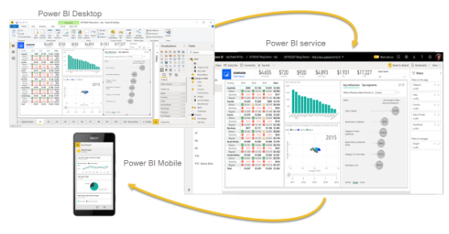
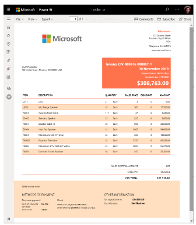
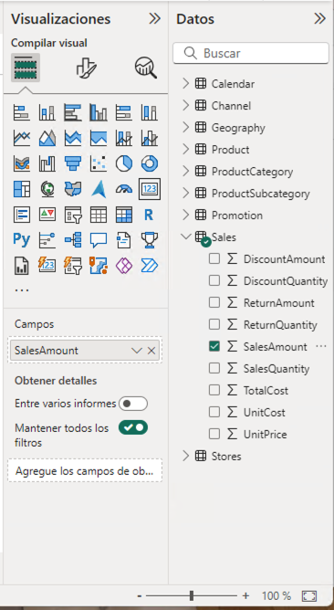
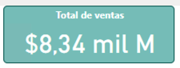
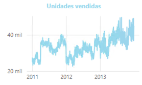
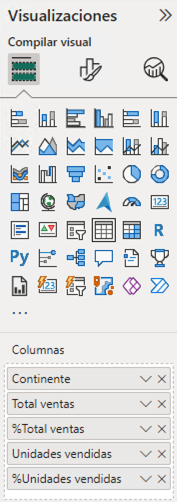
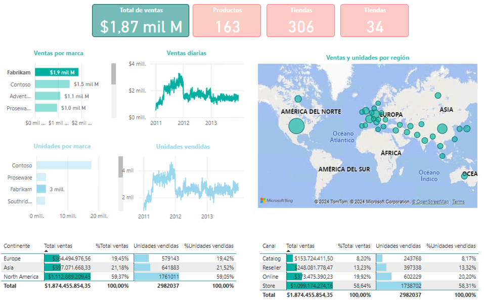
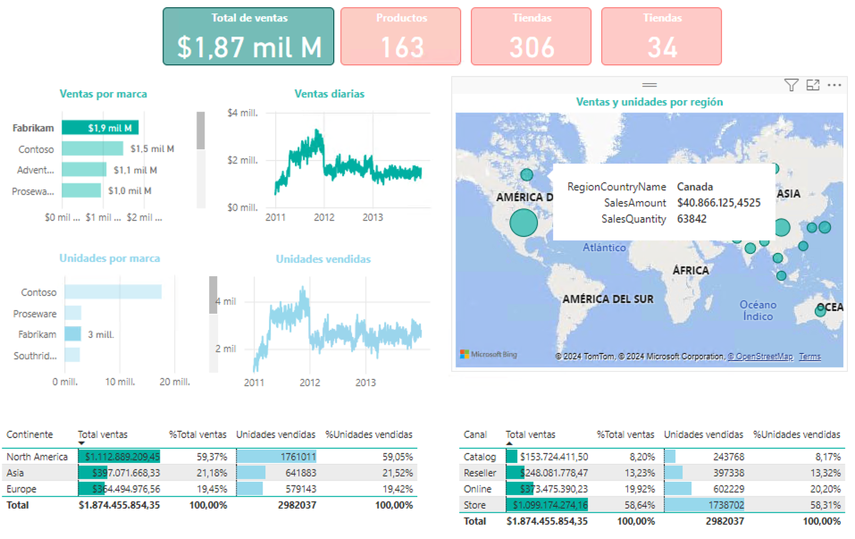
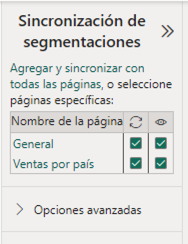

Resumen
En este tutorial se describe la herramienta Power BI, que permite la visualización de datos de forma sencilla y eficaz. Se describen las principales características de la herramienta y se muestran ejemplos de uso. Para facilitar la introducción de conceptos se presenta un caso de estudio en el que se analizan datos de ventas de una empresa ficticia, denominada Contoso. En particular, se muestra cómo crear un informe interactivo con Power BI y cómo utilizar las funcionalidades básicas del informe. Se describen las funcionalidades de filtrado, ordenación y exploración de datos, así como la creación de segmentadores. Se muestra cómo crear visualizaciones como tarjetas, gráficos de líneas, tablas de datos, mapas y gráficos de barras.
1. Introducción
Power BI es una herramienta de visualización de datos que permite la creación de informes interactivos y atractivos. Permite la conexión a múltiples fuentes de datos, la creación de gráficos y tablas, y la publicación de informes en la nube. Power BI es una herramienta muy potente y versátil que se puede utilizar en múltiples contextos, desde la empresa hasta la educación. Proporciona información útil en cualquier dispositivo, lo que facilita la toma de decisiones basada en datos. Además, permite la transforamción de datos, combinándolos desde diferentes fuentes y aplicando operaciones de limpieza y transformación. Power BI ofrece una amplia variedad de visualizaciones, desde gráficos de barras y líneas hasta mapas y diagramas de flujo.
También permite la creación de cuadros de mando interactivos y la publicación de informes en la nube. En este artículo se describen las principales características de Power BI y se muestran ejemplos de uso.
1.1. La familia de productos Power BI
Power BI es una herramienta de visualización de datos que forma parte de la familia de productos de Microsoft. La familia de productos Power BI incluye:
-
Power BI Desktop: Es una aplicación de escritorio, disponible sólo para Microsoft Windows, que permite la creación de informes interactivos y atractivos. Permite la conexión a múltiples fuentes de datos, la creación de gráficos y tablas, y la publicación de informes en la nube.
-
Power BI Service: Es una plataforma en la nube que permite la publicación y el consumo de informes creados con Power BI Desktop. Permite la colaboración en tiempo real y la visualización de informes en cualquier dispositivo. Dentro de la clasificación de productos cloud, se corresponde con la categoría de Software as a Service (SaaS).
-
Power BI Mobile: Es una aplicación móvil, disponible para iOS y Android, que permite la visualización de informes creados con Power BI Desktop y publicados en Power BI Service. Permite la visualización de informes en cualquier dispositivo móvil, incluyendo smartphones y tablets.
 -
Report Builder: Es una aplicación de escritorio, disponible sólo para Microsoft Windows, que permite la creación de informes interactivos y atractivos para salida impresa. Permite la conexión a múltiples fuentes de datos, la creación de gráficos y tablas, y la publicación de informes en la nube.
 -
Power BI Report Server: Es una plataforma de informes en local que permite la publicación y el consumo de informes creados con Power BI Desktop. Permite la colaboración en tiempo real y la visualización de informes en cualquier dispositivo.
1.2. Fuentes de datos
Power BI permite la conexión a múltiples fuentes de datos, incluyendo bases de datos, archivos de texto, archivos de Excel, servicios web, y aplicaciones en la nube. A continuación se describen las principales fuentes de datos compatibles con Power BI:
-
Fuentes de datos comunes: Archivos de Excel, CSV y conexión a bases de datos SQL Server, Oracle, MySQL, PostgreSQL, entre otros.
-
Fuentes de datos interesantes: Fuentes de datos web (REST API, scraping, …), archivos PDF, Google Sheets, entre otros.
-
Fuentes de datos avanzadas: Parquet, Hadoop, Spark, así como scripts de R y Python, entre otros.
1.3. Posición de Power BI en el mercado
Según el cuadrante de Gartner de 2024 para plataformas analíticas y de Business Intelligente, Power BI es una de las herramientas líderes en el mercado de análisis y visualización de datos. Power BI destaca por su facilidad de uso, su integración con otras herramientas de Microsoft, y su capacidad para trabajar con grandes volúmenes de datos. Power BI es una herramienta muy versátil que se puede utilizar en múltiples contextos, desde la empresa hasta la educación.
Power BI está situado en el cuadrante de Gartner desde 2008, siendo líder desde 2019. Esto refleja la posición de Power BI como una de las herramientas de visualización de datos más populares y utilizadas en el mercado.
2. Caso de estudio. Análisis de ventas
En este caso de estudio se muestra cómo utilizar Power BI para analizar datos de ventas. Se parte de un conjunto de datos de ventas de una empresa ficticia, denominada Contoso, y se muestra cómo crear un informe interactivo con Power BI. El objetivo es analizar las ventas por producto, por cliente y por región, y obtener información útil para la toma de decisiones. Los datos proceden de un ejemplo que proporciona Microsoft. Se trata de un conjunto de datos de ventas que incluye información sobre productos, clientes, regiones y ventas. El archivo se puede descargar desde el siguiente enlace: Archivo base Power BI de ventas de Contoso. Se trata de un archivo Power BI.
|
Tip
|
Se recomienda crear una copia del archivo original antes de realizar cualquier modificación. La copia a mantener se podría llamar "Contoso Sales base.pbix". Para el tutorial se podría crear un archivo llamado "Contoso Sales.pbix". |
Los archivos Power BI suelen contener modelos, informes e incluso datos. Se pueden abrir con Power BI Desktop y Power BI Service. Al abir el archivo, en la parte izquierda se encuentran las pestañas de "Vista de informe" (zona de diseño de informes), "Vista de datos" (permite la exploración rápida de una tabla seleccionada en la parte derecha), "Vista de modelo" (muestra las tablas y relaciones entre ellas) y "Vista de consultas DAX" (para realizar consultas y cálculos en DAX). En la parte derecha se encuentran las tablas y campos de la base de datos. En la parte central se encuentra el lienzo, donde se pueden arrastrar y soltar campos para crear visualizaciones. La figura siguiente ilustra la interfaz de Power BI Desktop destacando las pestañas y la zona de tablas.
|
Note
|
Los archivos Power BI suelen contener datos. Esos datos están cargados en el propio archivo .pbix y existe la posibilidad de actualizarlos. Por otro lado, es posible configurar el modelo para que haya ciertas columnas que no estén disponibles para los usuarios finales. |
2.1. Modelo de datos
El modelo de datos es una representación visual de las tablas y relaciones en una base de datos. En Power BI, el modelo de datos se crea automáticamente al importar datos de una fuente de datos. El modelo de datos se puede personalizar añadiendo tablas, campos y relaciones. Esta personalización puede ocultar campos o crear nuevos campos calculados, cambiar nombres, crear jerarquías, etc. A continuación se muestra el modelo de datos del caso de estudio:
Se puede observar que se trata de un modelo en copo de nieve ya que algunas tablas de dimensión tienen relaciones con otras tablas de dimensión habiendo sufrido un proceso de normalización. Dejando de lado la normalización, el modelo de datos es sencillo y fácil de entender. El modelo de datos consta de una tabla central de ventas (Sales) que contiene datos sobre las ventas de productos en diferentes tiendas y teniendo en cuenta las condiciones promocionales de venta así como los canales de venta utilizados. La tabla de ventas tiene relaciones con otras tablas de dimensión, como la tabla de productos (Product), la tabla de tiendas (Stores), la tabla de promociones (Promotion), la tabla de canales de venta (Channel), así como la tabla de fechas ('Calendar'). Las tablas de dimensión contienen información adicional sobre los productos, las tiendas, las promociones, los canales de venta y las fechas. Las tablas de dimensión se utilizan para enriquecer los datos de ventas y facilitar el análisis de los mismos.
En el diagrama también se puede observar que hay ciertos campos que están ocultos (aparecen con icono de un ojo tachado). Estos campos son necesarios para el modelo de datos pero no son relevantes para los usuarios finales. De esta forma, estos campos no estarán disponibles en la visualizaciones. Por ejemplo, los campos ProductKey, StoreKey, PromotionKey, ChannelKey y DateKey se utilizan para relacionar las tablas de dimensión con la tabla de hechos ventas, pero no están visibles en el modelo base. De partida, estas columnas no son relevantes para los usuarios finales, por lo que están ocultas en el modelo de datos. Más adelante se verá cómo se pueden hacerlas visibles para que puedan estar útiles en ciertas visualizaciones.
2.2. Creación de una tarjeta con el total de ventas
Las tarjetas son visualizaciones que muestran un único valor. Pueden ser útiles para mostrar el total de ventas, el número de productos vendidos, el beneficio neto, etc. Para crear una tarjeta con el total de ventas, se siguen los siguientes pasos:
-
Seleccionar la pestaña "Vista de informe".
-
Seleccionar la visualización "Tarjeta" en la barra de visualizaciones.
-
Arrastrar el campo
SalesAmount`de la tablaSalesal cuadro Valores de la tarjeta. -
Personalizar la tarjeta cambiando el formato del número, el color del texto, el tamaño de la letra, etc. En la pestaña "Dar formato a su objeto visual"
-
En la pestaña "Objeto visual", establecer el color del texto a blanco, número de decimales a 2 y desactivar la "Etiqueta de categoría".
-
En la pestaña "General", establecer el texto del título a "Total de ventas", ponerlo en blanco, negrita centrado. Ena la zona de "Efectos", cambiar el color de fondo a un tono verde pastel, con el borde un poco más oscuro y las esquinas ligeramente redondeadas.
-
Ajustar la altura de la tarjeta para que se vea bien sin ocupar demasiado espacio.

-
2.3. Creación de gráficos de líneas con las ventas y unidades vendidas
Los gráficos de líneas son visualizaciones que muestran la evolución de un valor a lo largo del tiempo. Son útiles para visualizar tendencias y patrones en los datos. En este caso de estudio, se van a crear dos gráficos de líneas: uno con las ventas a lo largo del tiempo y otro con las unidades vendidas a lo largo del tiempo. A continuación se describen los pasos para crear estos gráficos de líneas.
2.3.1. Creación de un gráfico de líneas con las ventas a lo largo del tiempo
|
Important
|
Inicialmente el modelo de datos está configurado para que la columna |
Para crear un gráfico de líneas con las ventas a lo largo del tiempo, se siguen los siguientes pasos:
-
Seleccionar la pestaña "Vista de informe".
-
Seleccionar la visualización "Gráfico de líneas" en la barra de visualizaciones. Esto creará un gráfico de líneas vacío en el lienzo. Situaremos el gráfico de líneas debajo de la tarjeta con el total de ventas.
-
Arrastrar el campo
DateKeyde la tablaSalesa Eje X del gráfico de líneas. -
Arrastrar el campo
SalesAmountde la tablaSalesa Eje Y del gráfico de líneas. -
Personalizar el gráfico de líneas cambiando el color de la línea, añadiendo líneas de cuadrícula y añadiéndole un título. En la pestaña "Dar formato a su objeto visual"
-
En la pestaña "Objeto visual" activar las líneas de cuadrícula verticales y horizontales, configurar el color de la línea de la serie de datos para que tenga el mismo valor que el color de la tarjeta de ventas.
-
En la pestaña "General", establecer el texto del título a "Ventas diarias", ponerlo en el mismo color que la línea del gráfico, negrita y centrado.

-
2.3.2. Creación de un gráfico de líneas con las unidades vendidas a lo largo del tiempo
A partir del gráfico de líneas anterior, se puede crear un gráfico de líneas con las unidades vendidas a lo largo del tiempo. Bastará con crear una copia del gráfico de líneas anterior y hacer unas ligeras modificaciones. Para ello, se siguen los siguientes pasos:
-
Copiar y pegar el gráfico de líneas con las ventas diarias. Situaremos la copia debajo del original.
-
Sobre la copia, sustituir el campo
SalesAmountpor el campoSalesQuantityde la tablaSales. -
Personalizar el gráfico de líneas cambiando el color de la línea. Dejaremos los tonos verdes para el importe de ventas y utilizaremos tonos azules para las unidades vendidas. Análogamente al gráfico anterior, se personalizará el título del gráfico, el color de la línea y las líneas de cuadrícula:
-
En la pestaña "Objeto visual" activar las líneas de cuadrícula verticales y horizontales, y configurar el color de la línea de la serie de datos para que tenga un tono azul claro.
-
En la pestaña "General", establecer el texto del título a "Unidades vendidas" y ponerlo en azul claro, como el de la línea del gráfico.

-
2.4. Creación de tablas de datos con las ventas y unidades vendidas
Las tablas de datos son visualizaciones que muestran los datos en forma de tabla. Son útiles para mostrar datos detallados y permiten ordenar y filtrar los datos. En este caso de estudio, se va a crear una tabla que muestre las ventas y unidades vendidas por continente. Estas tablas complementarán los gráficos de líneas anteriores y permitirán ver los datos de forma detallada. Además, las tablas de datos mostrarán los datos en formato numérico y en formato de porcentaje. A continuación se describen los pasos para crear las tablas de datos.
2.4.1. Creación de una tabla de datos con las ventas por continente
Para crear una tabla de datos con las ventas por continente, se siguen los siguientes pasos:
-
Seleccionar la pestaña "Vista de informe".
-
Seleccionar la visualización "Tabla" en la barra de visualizaciones. Esto creará una tabla vacía en el lienzo. Situaremos la tabla debajo de los gráficos de líneas.
-
Arrastrar el campo
ContinentNamede la tablaGeographya Columnas de la tabla. Añadir también 2 veces los camposSalesAmountySalesQuantityde la tablaSalesa Valores de la tabla. Añadiremos los campos de medida dos veces para poder mostrarlos en formato numérico y en formato de porcentaje. Adaptar el ancho de la visualización para que se vean bien los datos. -
Personalizar la tabla de datos cambiando el formato de los campos. En la pestaña "Agregar datos a sus objetos actuales";
-
Primer
SalesAmount: En el desplegable seleccionarFormato condicionaly despuésBarras de datos. Seleccionar verde pastel como color de la barra de datos -
Segundo
SalesAmount: En el desplegable seleccionarMostrar valor comoy despuésPorcentaje de total general. -
Primer
SalesQuantity: En el desplegable seleccionarFormato condicionaly despuésBarras de datos. Seleccionar azul claro como color de la barra de datos -
Segundo
SalesQuantity: En el desplegable seleccionarMostrar valor comoy despuésPorcentaje de total general. -
Para cada columna de valores cambiar los nombres de las columnas a
Continente, `Total ventas,% Total ventas,Unidades vendidasy% Unidades vendidas.
-
-
En la pestaña "Dar formato a su objeto visual":
-
Seleccionar la pestaña "Objeto visual" y establecer en Columna específica el número de decimales a 2 para la columna
Total ventas. 6 Ajustar el ancho de la visualización para que se vean bien los datos.
-
Finalmente. la tabla de datos mostrará las ventas y unidades vendidas por continente en formato numérico y en formato de porcentaje. La tabla de datos permitirá ver los datos de forma detallada y facilitará la toma de decisiones. La figura siguiente muestra la tabla de datos con las ventas y unidades vendidas por continente.
2.4.2. Creación de una tabla de datos con el total de ventas y unidades por canal
A partir de la tabla de datos anterior, se puede crear una tabla de datos con el total de ventas y unidades por canal. Bastará con crear una copia de la tabla de datos anterior y hacer unas ligeras modificaciones. Para ello, se siguen los siguientes pasos:
-
Copiar y pegar la tabla de datos con las ventas por continente. Situaremos la copia a la derecha de la original.
-
Sobre la copia, sustituir el campo
ContinentNamepor el campoChannelNamede la tablaChannel. Cambiar el nombre de la columna aCanal.
La tabla de datos modificada será como la siguiente:
2.5. Creación de un mapa con las ventas por región
Los mapas son visualizaciones que muestran datos geográficos en forma de mapa. Son útiles para visualizar datos por región y permiten ver patrones geográficos en los datos. En este caso de estudio, se va a crear un mapa que muestre las ventas por región. Para ello, se siguen los siguientes pasos:
|
Caution
|
De forma predeterminada, Power BI tiene desativada la representación de datos geográficos. Esta configuración se puede cambiar en 
|
-
Seleccionar la pestaña "Vista de informe".
-
Seleccionar la visualización "Mapa" en la barra de visualizaciones. Esto creará un mapa vacío en el lienzo. Situaremos el mapa a la derecha de los gráficos de líneas y sobre la tabla de datos de ventas por canal.
-
Arrastrar el campo
RegionCountryNamede la tablaGeographya Ubicación del mapa. -
Arrastrar el campo
SalesAmountde la tablaSalesa Tamaño de la burbuja del mapa. -
Arrastrar el campo
SalesQuantityde la tablaSalesa Información sobre herramientas del mapa. Esto permitirá ver el total de ventas y unidades vendidas al pasar el ratón por encima de las burbujas. -
Personalizar el mapa cambiando el título. En la pestaña "Dar formato a su objeto visual", en la pestaña "General" establecer el texto del título a "Ventas y unidades por región", ponerlo en el mismo color que las burbujas, negrita y centrado.
La figura siguiente muestra el mapa con las ventas por región. En el mapa, las burbujas representan las ventas por región y el tamaño de las burbujas representa el importe de las ventas. Al pasar el ratón por encima de las burbujas, se muestra el total de ventas y unidades vendidas.

2.6. Incorporación de nuevas tarjetas de datos
A partir de la tarjeta de ventas, se pueden crear nuevas tarjetas de datos que muestren información adicional. Por ejemplo, se pueden crear tarjetas de datos con el total de productos vendidos, así como el total de tiendas y regiones que han realizado ventas. Para ello, se siguen los siguientes pasos:
|
Important
|
Inicialmente el modelo de datos está configurado para que las columnas |
-
Copiar y pegar la tarjeta de ventas. Situaremos la copia a la derecha de la original.
-
Sobre la copia, sustituir el campo
SalesAmountpor el campoProductKeyde la tablaSales. Utilizar la funciónRecuento (distintivo)para contar los productos diferentes que se han vendido.` Cambiar el título de la tarjeta a "Productos" y el color a rosa pastel. Añadirle también un borde un poco más oscuro. -
Cambiar el ancho de la tarjeta para que se vea bien.
-
Copiar y pegar la tarjeta de productos para mostrar el total de tiendas que han registrado ventas. Situaremos la copia a la derecha de la original. En este caso el campo a mostrar será
StoreKeyde la tablaSales. Usar también la opción de `Recuento (distintivo) para que muestre las tiendas diferentes que han registrado ventas. Cambiar el título de la tarjeta a "Tiendas" manteniendo el color y el borde de la tarjeta de productos. -
Copiar y pegar la tarjeta de tiendas para mostrar el total de regiones que han registrado ventas. Situaremos la copia a la derecha de la original. En este caso el campo a mostrar será
RegionCountryNamede la tablaGeography. Usar también la opción de `Recuento (distintivo) para que muestre las regiones diferentes que han registrado ventas. Cambiar el título de la tarjeta a "Regiones" manteniendo el color y el borde de la tarjeta de productos.
Las tarjetas deberán ser como las que se muestran en la figura siguiente.
2.7. Incorporación de nuevos gráficos de barras
A partir de los gráficos de líneas, se pueden crear nuevos gráficos de barras que muestren información adicional. Por ejemplo, se pueden crear gráficos de barras con las ventas y unidades vendidas por marca. En nuestro caso de uso situaremos los gráficos de barras a la izquierda de los gráficos de líneas. Para ello, se siguen los siguientes pasos:
2.7.1. Creación de un gráfico de barras con las ventas por marca
-
Copiar y pegar el gráfico de líneas con las ventas diarias. Situaremos la copia entre el original y el mapa.
-
Seleccionar el gráfico de la izquierda de Ventas diarias y cambiar su tipo a Gráfico de barras apiladas.
-
Sustituir el campo del Eje Y por el campo
BrandNamede la tablaProduct. -
Personalizar el gráfico de barras añadiéndole Etiquetas de datos y cambiándole el título.
-
En la pestaña "Dar formato a su objeto visual", pestaña "Objeto visual", en "Barras" activar "Etiquetas de datos".
-
En la pestaña "General", establecer el texto del título a "Ventas por marca" manteniendo el color de la línea del gráfico, negrita y centrado.
-
La figura siguiente muestra el gráfico de barras con las ventas por marca. En el gráfico, las barras representan las ventas por marca. Las etiquetas de datos muestran el total de ventas por marca.

2.7.2. Creación de un gráfico de barras con las unidades vendidas por marca
A partir del gráfico de líneas de ventas de unidades diarias, se puede crear un gráfico de barras con las unidades vendidas por marca. Bastará con crear una copia del gráfico de barras anterior y hacer unas ligeras modificaciones. Para ello, se siguen los siguientes pasos:
-
Copiar y pegar el gráfico de barras con las ventas por marca. Situaremos la copia entre el original y el mapa.
-
Seleccionar el gráfico de la izquierda de Unidades vendidas y cambiar su tipo a Gráfico de barras apiladas.
-
Sustituir el campo del Eje Y por el campo
BrandNamede la tablaProduct. -
Personalizar el gráfico de barras añadiéndole Etiquetas de datos y cambiándole el color y el título.
-
En la pestaña "Dar formato a su objeto visual", pestaña "Objeto visual", en "Barras" cambiar el color a azul pastel y activar "Etiquetas de datos".
-
En la pestaña "General", establecer el texto del título a "Unidades por marca" manteniendo el color de la línea del gráfico, negrita y centrado.
-
La figura siguiente muestra el gráfico de barras con las unidades vendidas por marca. En el gráfico, las barras representan las unidades vendidas por marca. Las etiquetas de datos muestran el total de unidades vendidas por marca.
3. Uso básico del informe de ventas
Con los pasos anteriores hemos creado un informe interactivo con Power BI que ya puede ser de utilidad para analizar las ventas de la empresa Contoso. El informe muestra las ventas por producto, marca, continente y canal. El informe incluye tarjetas con el total de ventas, gráficos de líneas con las ventas y unidades vendidas a lo largo del tiempo, tablas de datos con las ventas y unidades vendidas por continente y por canal, un mapa con las ventas por región, tarjetas de datos con el total de productos vendidos, tiendas y regiones que han registrado ventas, y gráficos de barras con las ventas y unidades vendidas por marca. El informe debe ser similar al que se muestra en la figura siguiente.
El informe es interactivo y permite explorar los datos de forma detallada. A continuación se describen algunas funcionalidades básicas del informe:
-
Filtrado de datos: Se pueden filtrar los datos del informe por producto, marca, continente, canal, región, etc. Al seleccionar un valor en una visualización, el resto de visualizaciones se actualizan automáticamente para mostrar los datos correspondientes. Por ejemplo, si se selecciona una marca en el gráfico de barras con las ventas por marca, el resto de visualizaciones se actualizarán para mostrar las ventas y unidades vendidas de esa marca. Esto permite analizar los datos de forma detallada y obtener información útil para la toma de decisiones. Por ejemplo, si se selecciona la marca
Fabrikamen el gráfico de barras de ventas por marca, se pueden ver las ventas y unidades vendidas de esa marca en el resto de visualizaciones. -
Ordenación de datos: Se pueden ordenar los datos del informe por importe de ventas, unidades vendidas, marca, continente, canal, etc. Al hacer clic en una columna de una tabla de datos, los datos se ordenan automáticamente en función de esa columna. Por ejemplo, si se hace clic en la columna
Total ventasde la tabla de datos con las ventas por continente, los datos se ordenarán automáticamente en función del importe de ventas. Esto permite analizar los datos de forma detallada y obtener información útil para la toma de decisiones. Por ejemplo, si se hace clic en la columnaTotal ventasde la tabla de datos con las ventas por continente, se pueden ver las ventas y unidades vendidas de cada continente ordenadas por importe de ventas. La figura siguiente muestra la tabla de datos con las ventas por continente ordenadas por importe de ventas para la marcaFabrikam. -
Exploración de datos: Se pueden explorar los datos del informe de forma interactiva. Al pasar el ratón por encima de una visualización, se muestran los datos correspondientes. Por ejemplo, al pasar el ratón por encima de una burbuja en el mapa con las ventas por región, se muestra el total de ventas y unidades vendidas de esa región. Esto permite analizar los datos de forma detallada y obtener información útil para la toma de decisiones. Por ejemplo, al pasar el ratón por encima de una burbuja en el mapa con las ventas por región, se pueden ver las ventas y unidades vendidas de esa región. La figura siguiente muestra el mapa con las ventas por región y el total de ventas y unidades vendidas de la región
Canadápor la marcaFabrikam.
|
Tip
|
Es posible seleccionar varios elementos para un filtrado más preciso. Para ello se puede mantener pulsada la tecla |
4. Uso de segmentadores
Los segmentadores son visualizaciones que permiten filtrar los datos del informe de forma interactiva. Son útiles para seleccionar un valor o un rango de valores y ver cómo afecta a las visualizaciones. En este caso de estudio, se van a crear segmentadores que permitan filtrar los datos por año, producto y tienda. Los segmentadores complementarán las visualizaciones existentes y permitirán explorar los datos de forma detallada. A continuación se describen los pasos para crear los segmentadores.
4.1. Creación de un segmentador de año
Para crear un segmentador de año, se siguen los siguientes pasos:
-
Seleccionar la pestaña "Vista de informe".
-
Dejar espacio para los segmentadores alienando las tarjetas de datos a la izquierda.
-
Seleccionar la visualización "Segmentación de datos" en la barra de visualizaciones. Esto creará un segmentador vacío en el lienzo. Situaremos el segmentador a la derecha de las tarjetas de datos.
-
Arrastrar el campo
Yearde la tablaCalendara Campo del segmentador. Esto creará un segmentador con los años disponibles en la tablaCalendar. -
Personalizar el segmentador cambiando el estilo y el título. En la pestaña "Dar formato a su objeto visual", en la pestaña "Objeto visual" establecer la Configuración de la segmentación a "Menú desplegable"y el texto del título a "Año".
-
Ajustar el ancho del segmentador para que se vea bien.
La figura siguiente muestra el segmentador de año. En el segmentador, se pueden seleccionar los años disponibles en la tabla Calendar y ver cómo afecta a las visualizaciones. Por ejemplo, al seleccionar el año 2011, se pueden ver las ventas y unidades vendidas de ese año en las visualizaciones.
|
Tip
|
Es posible seleccionar varios elementos para un filtrado más preciso. Para ello se puede mantener pulsada la tecla |
4.2. Creación de un segmentador de producto
A partir del segmentador de año, se puede crear un segmentador de producto que permita filtrar los datos por producto. Para ello, se siguen los siguientes pasos:
-
Copiar y pegar el segmentador de año. Situaremos la copia a la derecha del original.
-
Sobre la copia, sustituir el campo
Yearpor el campoProductNamede la tablaProduct. Cambiar el título del segmentador a "Producto". -
Como la lista de productos es enorme, en casos como este es conveniente activar la opción de "Buscar" en el segmentador. Para ello, seleccionar el objeto visual, pulsar los puntos suspensivos de arriba a la derecha del control y activar la opción de "Buscar".
-
Ajustar el ancho del segmentador para que se vea bien.
La figura siguiente muestra el segmentador de producto. En el segmentador, se pueden seleccionar los productos disponibles en la tabla Product y ver cómo afecta a las visualizaciones. Por ejemplo, para seleccionar el producto Fabrikam Laptop 12 M2002 Red, introducir "M2002" en el cuadro de búsqueda. A continuación, seleccionar el producto y a continuación se pueden ver las ventas y unidades vendidas de ese producto en las visualizaciones. Si además se tiene seleccionado un año, se pueden ver las ventas y unidades vendidas de ese producto en ese año. La figura siguiente muestra el segmentador de producto actuando conjuntamente con el segmentador de año mostrando las ventas y unidades vendidas del producto Fabrikam Laptop 12 M2002 Red en el año 2011.
4.3. Creación de un segmentador de tienda
A partir del segmentador de producto, se puede crear un segmentador de tienda que permita filtrar los datos por tienda. Para ello, se siguen los siguientes pasos:
-
Copiar y pegar el segmentador de producto. Situaremos la copia a la derecha del original.
-
Sobre la copia, sustituir el campo
ProductNamepor el campoStoreNamede la tablaStores. Cambiar el título del segmentador a "Tienda". -
Como hemos copiado el segmentador de producto, es posible que la opción de "Buscar" esté activada. En caso contrario, activarla. Esto es útil para encontrar rápidamente la tienda deseada ya que la lista de tiendas puede ser extensa.
-
Ajustar el ancho del segmentador para que se vea bien.
La figura siguiente muestra el segmentador de tienda. En el segmentador, se pueden seleccionar las tiendas disponibles en la tabla Stores y ver cómo afecta a las visualizaciones. Por ejemplo, para seleccionar la tienda Contoso York Store, introducir "York" en el cuadro de búsqueda. A continuación, seleccionar la tienda correcta y a continuación se pueden ver las ventas y unidades vendidas de esa tienda en las visualizaciones. Si además se tiene seleccionado un año y un producto, se pueden ver las ventas y unidades vendidas de esa tienda en ese año y para ese producto. La figura siguiente muestra el segmentador de tienda actuando conjuntamente con el segmentador de producto y el segmentador de año mostrando las ventas y unidades vendidas de la tienda Contoso York Store` para el producto Fabrikam Laptop 12 M2002 Red en el año 2011.
Con los segmentadores creados, el informe interactivo con Power BI es aún más útil para analizar las ventas de la empresa Contoso. Los segmentadores permiten filtrar los datos por año, producto y tienda y ver cómo afecta a las visualizaciones. El informe incluye tarjetas con el total de ventas, gráficos de líneas con las ventas y unidades vendidas a lo largo del tiempo, tablas de datos con las ventas y unidades vendidas por continente y por canal, un mapa con las ventas por región, tarjetas de datos con el total de productos vendidos, tiendas y regiones que han registrado ventas, gráficos de barras con las ventas y unidades vendidas por marca, y segmentadores de año, producto y tienda.
5. Informes con varias pestañas
Power BI permite crear informes con varias pestañas. Cada pestaña puede contener visualizaciones diferentes y permitir al usuario explorar los datos de forma detallada. En este caso de estudio, se va a crear una nueva pestaña con visualizaciones adicionales. La nueva pestaña permitirá analizar las ventas por país. La creación de informes con varias pestañas es útil para organizar las visualizaciones y facilitar la exploración de los datos. Normalmente se tendrá una pestaña inicial con un resumen de los datos y pestañas adicionales con visualizaciones más detalladas. A continuación se describen los pasos para crear la nueva pestaña.
5.1. Creación de una nueva pestaña
-
Seleccionar la pestaña "Vista de informe".
-
Crear una forma de rectángulo con las esquinas redondeadas que englobe todas las visualizaciones de la pestaña actual. Esta forma servirá de separador entre las visualizaciones de la pestaña actual y las de la nueva pestaña. Enviar atrás la forma para que quede detrás de las visualizaciones.
-
Insertar un botón de navegación entre páginas selecccionando
Insertar | Botones | Navegador | Navegador de páginas -
Modificar el formato del botón de navegación. En la pestaña "Dar formato a su objeto visual":
-
En
FormaseleccionarPestaña redondeada, ambas partes superiores. -
Configurar el estilo del botón cuando la pestaña seleccionada. En
Estiloseleccionar enEstadoel valorSeleccionado. Usar el color verde pastel para cambiar el color de relleno y del borde en las opcionesRellenaryBorde, respectivamente. -
Configurar el estilo del botón cuando la pestaña no está seleccionada. En
Estiloseleccionar enEstadoel valor `Valor predeterminado. Mantener el borde y cambiar el color del texto y relleno para que sea texto verde pastel sobre fondo blanco.
-
-
Cambiar el título de la pestaña a
General. -
Duplicar la pestaña actual. Seleccionar la pestaña duplicada y cambiar el título a
Ventas por país. -
Modificar el ancho de los botones de navegación para que se vean bien.
Las pestañas ya son totalmente funcionales y permiten navegar entre ellas. En modo diseño la navegación se hace con Ctrl + clic en el botón de navegación. En modo de visualización, se puede hacer clic en el botón de navegación para cambiar de pestaña. La figura siguiente muestra el informe con las dos pestañas creadas mostrando la pestaña General.
5.2. Personalización del informe de Ventas por país
Una vez creada la nueva pestaña de ventas por país, realizaremos una serie de cambios para adaptar las visualizaciones a este nuevo contexto. A continuación se describen los pasos para personalizar el informe de ventas por país.
-
Modificar las listas desplegables para dejar la de año en primera posición y una de selección de país. La lista de selección de país está basada en el campo
RegionCountryNamede la tablaGeography. -
Eliminar la visualización del mapa.
-
Organizar todos los gráficos de líneas anteriores en una sola fila debajo de las tarjetas de datos y segmentadores.
-
Dejar una única visualización de tabla de datos que muestre el importe de ventas y unidades por tienda (
StoreNamede la tablaStores). Modificar el nombre de la columna aTienda. Modificar el formato de la tabla para que se vea bien y colocarla en el cuadrante inferior derecho. -
Crear un gráfico de barras con ventas por categoría. Para ello, se selecciona la visualización "Gráfico de barras agrupadas" en la barra de visualizaciones. Esto creará un gráfico de barras vacío en el lienzo. Situaremos el gráfico de barras en la parte izquierda del cuadrante inferior izquierdo ocupando la mitad del cuadrante. Arrastrar el campo
ProductCategoryde la tablaProductCategorya Eje Y del gráfico de barras. Arrastrar el campoSalesAmountde la tablaSalesa Eje X del gráfico de barras. Personalizar el gráfico de barras cambiando el color de las barras y añadiéndole un título. En la pestaña "Dar formato a su objeto visual", en la pestaña "Objeto visual" establecer el color de las barras a un tono ocre y el texto del título a "Ventas por categoría". Activar también la opción deEtiquetas de datos. -
Crear en el espacio libre del cuadrante izquierdo un gráfico de anillos con ventas por canal. Para ello, se selecciona la visualización "Gráfico de anillos" en la barra de visualizaciones. Esto creará un gráfico de anillos vacío en el lienzo. Arrastrar el campo
ChannelNamede la tablaChannela Leyenda del gráfico de anillos. Arrastrar el campoSalesAmountde la tablaSalesa Valores del gráfico de anillos. Personalizar el gráfico de anillos cambiando el título a "Ventas por canal". Activar también la opción deEtiquetas de datos.
La figura siguiente muestra el informe con las dos pestañas creadas mostrando la pestaña Ventas por país.
Si usamos los segmentadores de año y país combinado con la selección de elementos en las visualizaciones se pueden obtener datos muy interesantes. Por ejemplo, si seleccionamos el país Spain en la lista desplegable y seleccionamos la categoría Computers en el gráfico de barras de ventas por categoría, podemos ver las ventas y unidades vendidas de esa categoría en ese país. La figura siguiente muestra el informe con los resultados.
5.3. Sincronización de segmentadores entre pestañas
Power BI permite sincronizar los segmentadores entre pestañas para que al seleccionar un valor en un segmentador en una pestaña, se actualicen automáticamente los valores en los segmentadores de las demás pestañas. Esto es útil para explorar los datos de forma detallada y obtener información útil para la toma de decisiones. A continuación se describen los pasos para sincronizar los segmentadores entre pestañas.
-
Seleccionar la pestaña "Vista de informe".
-
Seleccionar el segmentador de año en la pestaña
General. -
En el menú
VerseleccionarSincronización de segmentaciones. Aparecerá a la derecha la barra de sincronización de segmentadores. La barra permite seleccionar en qué pestañas está visible el segmentador seleccionado y si se sincroniza con otros segmentadores de otras páginas. En este caso, se seleccionarán las pestañasGeneralyVentas por paíspara que el segmentador de año esté visible en esas pestañas y se sincronicen en ambas páginas, de forma que al seleccionar un año en una pestaña, se actualicen automáticamente los valores en la otra pestaña.
Podemos comprobar que al seleccionar un año en la pestaña General, se actualizan automáticamente los valores en la pestaña Ventas por país. Por ejemplo, si seleccionamos el año 2011 en la pestaña General, se pueden ver las ventas y unidades vendidas de ese año en la pestaña Ventas por país. La figura siguiente muestra el informe con los resultados.
5.4. Exclusión de visualizaciones al filtrar
Power BI permite excluir visualizaciones al filtrar los datos para que no se actualicen automáticamente al usar segmentadores. Esto es útil para mantener una visualización fija y compararla con otras visualizaciones. En nuestro caso de estudio vamos a excluir las tarjetas de datos del filtrado. De esta forma, siempre mostrarán los totales absolutos independientemente de los filtros aplicados. A continuación se describen los pasos para excluir visualizaciones al filtrar.
-
Seleccionar la pestaña "Vista de informe".
-
Seleccionar menú
Formato | Editar interacciones. -
Seleccionar segmentador (p.e. la lista de desplegable de año) y seleccionar la opción
Ninguno-el icono con forma de prohibido- para las tarjetas de datos. De esta forma, las tarjetas de datos no se actualizarán automáticamente al usar el segmentador de año. -
Repetir el proceso para el segmentador de producto y de tienda en la pestaña
General. -
Repetir el proceso para los segmentadores de la pestaña
Ventas por país.
De esta forma, las tarjetas de datos no se actualizarán automáticamente al usar los segmentadores de año, producto y tienda. Esto permite mantener los totales absolutos de ventas y unidades vendidas independientemente de los filtros aplicados. La figura siguiente muestra el informe con los resultados en la pestaña General. Se puede observar que aunque se seleccionen valores en los segmentadores de año, producto y tienda, las tarjetas de datos no se actualizan y muestran los totales absolutos de ventas y unidades vendidas.
6. Publicación del informe en Power BI Service
Power BI permite publicar informes en Power BI Service para compartirlos con otras personas. Power BI Service es una plataforma en la nube que permite ver y compartir informes de Power BI. En este caso de estudio, se va a publicar el informe de ventas en Power BI Service. A continuación se describen los pasos para publicar el informe en Power BI Service.
|
Important
|
Para publicar un informe en Power BI Service, es necesario tener una cuenta de Power BI. En nuestro caso usaremos la cuenta PowerBI disponible en la licencia de estudiante de la UAL. |
En la Vista de informe de la vista de escritorio, no la de disponsitivos móviles, seleccionar el botón Publicar en la barra de herramientas. Si no tenemos iniciada la sesión en nuestra cuenta de Microsoft, aparecerá una ventana emergente para iniciar sesión en Power BI. Introducir las credenciales y seleccionar Iniciar sesión. A continuación, aparecerá una ventana emergente para seleccionar el espacio de trabajo en Power BI Service. Seleccionar el espacio de trabajo y seleccionar Seleccionar. Aparecerá una ventana emergente para publicar el informe en Power BI Service. A continuación, se publicará el informe en Power BI Service. El informe está disponible en https://app.powerbi.com/. Si no está seleccionada el área de trabajo correcta, se puede cambiar en la parte izquierda de la pantalla. El informe se mostrará en la zona de informes. Se trata de informe totalmente funcional que se puede ver y compartir con otras personas en Power BI Service. La figura siguiente muestra el informe de ventas en Power BI Service.
7. Adaptación del informe para dispositivos móviles
Power BI permite adaptar los informes para dispositivos móviles. Los informes adaptados para dispositivos móviles se pueden ver en la aplicación móvil de Power BI y permiten explorar los datos de forma interactiva en cualquier lugar y en cualquier momento. En este caso de estudio, se va a adaptar el informe de ventas para dispositivos móviles. A continuación se describen los pasos para adaptar el informe para dispositivos móviles.
7.1. Creación de una vista para dispositivos móviles
-
Seleccionar la pestaña "Vista de informe".
-
Seleccionar el menú
Ver | Diseño para móviles. Esto creará una vista para dispositivos móviles en el lienzo. La vista para dispositivos móviles permite diseñar el informe para que se vea bien en dispositivos móviles.La vista para dispositivos móviles es una vista adicional que se puede personalizar para adaptar un informe existente a las dimensiones de los dispositivos móviles. Para crear una vista se añadirán las visualizaciones más importantes del informe original que se quieran mostrar en el informe para dispositivos móviles y se organizarán para que se vean bien en dispositivos móviles.
-
Para el informe para dispositivos móviles en este caso seleccionaremos las siguientes visualizaciones que colocaremos de arriba a abajo en este orden:
-
Total de ventas
-
Total de productos, regiones y tiendas
-
Gráfico de barras con ventas por marca
-
Gráfico de líneas con ventas diarias
-
Gráfico de barras con unidades por marca
-
Grácico de líneas con unidades vendidas
-
-
Ajustar el tamaño de las visualizaciones para que se vean bien en dispositivos móviles. Por ejemplo, se pueden reducir el tamaño de las visualizaciones para que se vean bien en dispositivos móviles. También se pueden cambiar el tamaño de las fuentes y los colores para que se vean bien en dispositivos móviles.
La figura siguiente muestra el informe general adaptado para dispositivos móviles. En el informe para dispositivos móviles, se han seleccionado las visualizaciones más importantes del informe original y se han organizado para que se vean bien en dispositivos móviles. El informe para dispositivos móviles permite explorar los datos de forma interactiva en cualquier lugar y en cualquier momento.
7.2. Uso de segmentadores en la vista para dispositivos móviles
Cada pestaña del informe original se puede adaptar para dispositivos móviles de forma independiente. Para ello, se selecciona la pestaña y se siguen los pasos anteriores para adaptar la pestaña para dispositivos móviles. La figura siguiente muestra el informe de ventas por país adaptado para dispositivos móviles. En el informe para dispositivos móviles, se han seleccionado los segmentadores, las visualizaciones más importantes de la pestaña original y se han organizado para que se vean bien en dispositivos móviles.
|
Tip
|
Esta misma idea de usar los segmentadores en la vista para dispositivos móviles se podría incorporar en la vista general para que se puedan seleccionar los años, productos y tiendas desde dispositivos móviles. |
7.3. Incorporación de navegadores entre páginas en la vista para dispositivos móviles
Finalmemte, es posible incorporar los navegadores entre páginas en la vista para dispositivos móviles. Para ello, se selecciona el botón de navegación entre páginas y se ajusta el tamaño y la posición para que se vea bien en dispositivos móviles. La figura siguiente muestra el informe de ventas general adaptado para dispositivos móviles con el botón de navegación entre páginas. El informe de ventas para móviles también ha sido modificado para incorporar los segmentadores de año, producto y tienda.
8. Conclusiones
El uso de herramientas como PowerBI para la visualización de datos es fundamental para la toma de decisiones en la empresa y permite analizar los datos de forma detallada y obtener información útil para la toma de decisiones. Power BI es una herramienta muy potente y versátil que permite crear informes interactivos fáciles de entender y compartirlos con otras personas.
En este tutorial se ha creado un informe interactivo con Power BI para mostrar las principales funcionalidades de Power BI. Se ha utilizado un caso de estudio para facilitar la introducción de conceptos y herramientas. El caso de estudio se ha basado en los datos de la empresa Contoso y se ha creado un informe interactivo para analizar las ventas de la empresa Contoso. En el tutorial se han utilizado visualizaciones básicas como las tarjetas de datos, los gráficos de barras, líneas y anillos, los mapas y las tablas de datos. El tutorial también ha introducido el uso de segmentadores mediante listas desplegables para el filtrado de información. Además, se ha mostrado cómo personalizar los informes para su utilización en dispositivos móviles y se ha visto cómo publicar los informes en Power BI Service para compartirlos con otras personas y poder consumirlos con una app móvil.